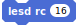
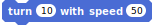
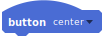

Syntax:
move(distance (~mm))
Move for a certain distance in pseudo-milimeters. If the distance is negative, the robot moves backwards. Speed around 100 mm/s. If the value is not typed, the robot doesn't stop.
Syntax:
move(distance (~mm)) with speed (value (~mm/s))
Move for a certain distance (approx. mm) with a given speed (approx. mm/s). If the distance is negative, the robot moves backwards. If the value is not typed, the robot doesn't stop.
Syntax:
move(distance) in (duration)
Move for a certain distance (approx. mm) in a certain time (seconds). If the distance is negative, the robot moves backwards.
Syntax:
Circle radius (radius) in (duration s
Arc of a circle of a certain radius (in approx. mm) and of a certain angle (in approx. degrees). If the radius is bigger than 0, it goes forward, otherwise it goes backwards. If the angle is bigger than 0, it goes clockwise, otherwise counterclockwise (when radius > 0).
Syntax:
turn(angle (~degrees))
Turn on itself of an angle in approx. degrees. Clockwise when angle > 0, counterclockwise when angle < 0.
Syntax:
turn(angle (~degrees)) in (duration) s
Turn on itself of an angle in approx. degrees in a time of a certain duration (seconds). Clockwise when angle > 0, counterclockwise when angle < 0.
Syntax:
motor[left, right or all]
Set the speed of left, right or both motors in Aseba unity (from -500 to 500).
Syntax:
leds rgb[top, bottom-left, bottom-right, all](Red value)(Green value)(Blue Value)
Set the color of the RGB LED on the top and bottom of the robot.
Syntax:
leds dial next[left, right]
Turn on the next or previous circle LED on the robot and turn OFF the current one.
Syntax:
leds dial all (led 0)(led 1)(led 2)(led 3)(led 4)(led 5)(led 6)(led 7)
Turn ON the 8 circle LED on top of the robot with an intensity from 0 to 32.
Turn OFF all LED associated to sensors.
Syntax:
Leds set color(value 0 to 200) on [top,bottom,all]
Set the value of the colors on the top, bottom or both. Scratch colors coding from 0 to 200 (0 = red).
Syntax:
Leds change color(value) on [top,bottom,all]
Adds the chosen value to the current color of the robot (top, bottom or both). Uses the Scratch colors coding
Syntax:
record sound (value)
Record the sound rx.wav on the microSD card of the robot where x is an integer (for example r1.wav).
Syntax:
replay sound (value)
Play the rx.wav sound on the microSD card of the robot where x is an integer (for example r1.wav).
Syntax:
set odometer(direction)(x)(y)
Set the odometer for direction (in degrees) and for initial position (coordinate x and y in millimeters). Set the initial position of the Scratch sprite corresponding to the physical Thymio robot.
Syntax:
leds sensors h (led 1)(led 2)(led 3)(led 4)(led 5)(led 6)(led 7)(led 8)
Set the LED associated to the horizontal proximity sensors with an intensity between 0 (OFF) and 32 (Totally ON). There are 8 LED, two of them for the central sensor.
Syntax:
leds sensors v (led 1)(led 2)
Set the LED associated to the ground sensors with an intensity between 0 (OFF) and 32 (Totally ON).
Syntax:
leds buttons (led 1)(led 2)(led 3)(led 4)
Set the LED associated to the buttons with an intensity between 0 (OFF) and 32 (Totally ON). These LED just blink and will not stay ON.

Syntax:
leds temperature(red)(blue)
Set the temperature LED (red meaning hot, blue meaning cold) with an intensity between 0 (OFF) and 32 (Totally ON).
Syntax:
leds sound (value)
Set the microphone LED with an intensity between 0 (OFF) and 32 (Totally ON).

Syntax:
leds rc (value)
Set the remote control LED with an intensity between 0 (OFF) and 32 (Totally ON).
Syntax:
emit (value)
Send a 10-bit value through the horizontal proximity sensors (local broadcast). Uses prox.comm.tx to store the 10-bit value.
Syntax:
Receive (value)
Receive a 10-bit value through the horizontal proximity sensors. Store it in prox.comm.rx.
Gives the temperature in Celsius degrees.
Syntax:
Measure motors [left, right, all]
Gives the measured speed of the motors (not the target). Used to compensate motor's drift.
Syntax:
tilt on [front-back, top-bottom, left-right]
Gives the value of an accelerometer along one axis (left-right, top-bottom, front-back). From 0 (rotation = 0°) to 22 (rotation = 90°). If the value is greater than 20 or less than -20, a shock is detected.
Syntax:
proximity sensor (sensor number)
Gives the value of a horizontal proximity sensor (0 to 5 are front sensors, 6 and 7 are back sensors). An object is detected if the value is greater than 2000, nothing is detected if the value is less than 1000. Maximal value 5000. Not very reliable for precise values in the range 0-1000.

Syntax:
proximity sensor (far left, left, center, right, far right, back left, back right)
Gives the value of a horizontal proximity sensor (far left, left, center, right, far right, back left, back right). An object is detected if the value is greater than 2000, nothing is detected if the value is less than 1000. Maximal value 5000. Not very reliable for precise values in the range 0-1000.
Syntax:
Ground sensor (sensor number)
Gives the value of a ground sensor (0 for the left one, 1 for the right one). Detects a white ground if the value is greater than 450 and a black ground if the value is less than 400. Maximum value 950.
Syntax:
Distance[front, back, ground]
Distance computed with the horizontal proximity sensors. Gives a ponderated mean of the front, back or ground sensors. Value between 0 (something very close) and 190 (nothing detected).
Syntax:
Angle [front, back, ground]
Gives an estimate of the direction of detection of an object computed with the horizontal proximity sensors (approximately 65 far left, 0 center, -65 far right). Be careful, if there is no object, the value is also 0 and if the object is thin the value can change quickly following its position with regards to the robot.
Gives a chain of values corresponding to the 7 horizontal proximity sensors, from 0 (nothing) to 5000 (something very close).
Gives a chain of values corresponding to the 2 ground sensors, from 0 (nothing or black surface) to 1000 (white surface).
Gives the intensity of a sound detected by the microphone. 0 if there is no noise. Greater than 2 if a noise is detected, maximum 10.
Syntax:
leds colors[top,bottom-left,bottom-right,all]
Gives the current color of the top, bottom-left, bottom right or all of the robot. The value is in Scratch colors coding from 0 to 197.
Syntax:
odometer[direction,x,y]
Give the angle or the x or y distance relatively to the initialisation in millimeters (10 corresponding to 50mm).

Detects a noise, named "clap" in VPL.

Gives a mean value of the three axes of the accelerometer when a shock is detected.
Syntax:
play sound SD(value)
Plays the px.wav sound from the microSD card of the robot where x is an integer (for example p1.wav).
Syntax:
object detected [front, back, under]
Detection of an object in front, back or under the robot. Becomes true as soon as one sensor gets bigger than 0.
Syntax:
play system sound [value]
Plays a system sound (on the robot). Value should be between 0 and 7.
Syntax:
play note (Frequency) during (duration) s
Play a note at a certain Frequency (Hz) during a certain duration (seconds).

Syntax:
turn(angle) with speed(speed(~mm/s))
Turn of a certain angle (degrees) with a certain speed (approx. mm/s). Turn clockwise if the angle is bigger than 0 and counterclockwise if the angle is less than 0. If the angle is not typed, the robot doesn't stop.

Syntax:
button [center, forward, backward, left, right]
Indicates if a button has been pressed. Becomes true if the button is pressed.